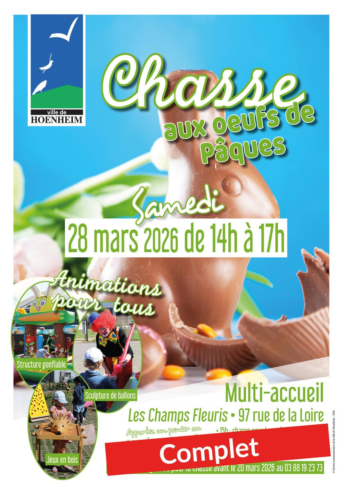

- Cet événement est terminé
Chasse aux oeufs – complet
28 mars à 14 h 00 min - 17 h 00 min
Navigation de l'événement

La grande chasse aux œufs aura lieu samedi 28 mars 2026 de 14h à 17h au Multi-accueil « Les Champs Fleuris » 97 rue de la Loire à Hoenheim.
Au programme :
- 15h00 : chasse pour les enfants de 4 à 5 ans
- 15h30 : chasse pour les enfants de 6 à 8 ans
Apportez un panier ou un récipient pour la récolte.
Jusqu’à 17h : animations pour tous
- jeux en bois,
- structure gonflable,
- sculpture de ballons…
Inscription obligatoire pour participer à la chasse avant le 20 mars 2026 au 03 88 19 23 73.
Contact et information : service Animation, Culture et Protocole 28 rue de la République – Tél. 03 88 19 23 73 – manifestations@ville-hoenheim.fr